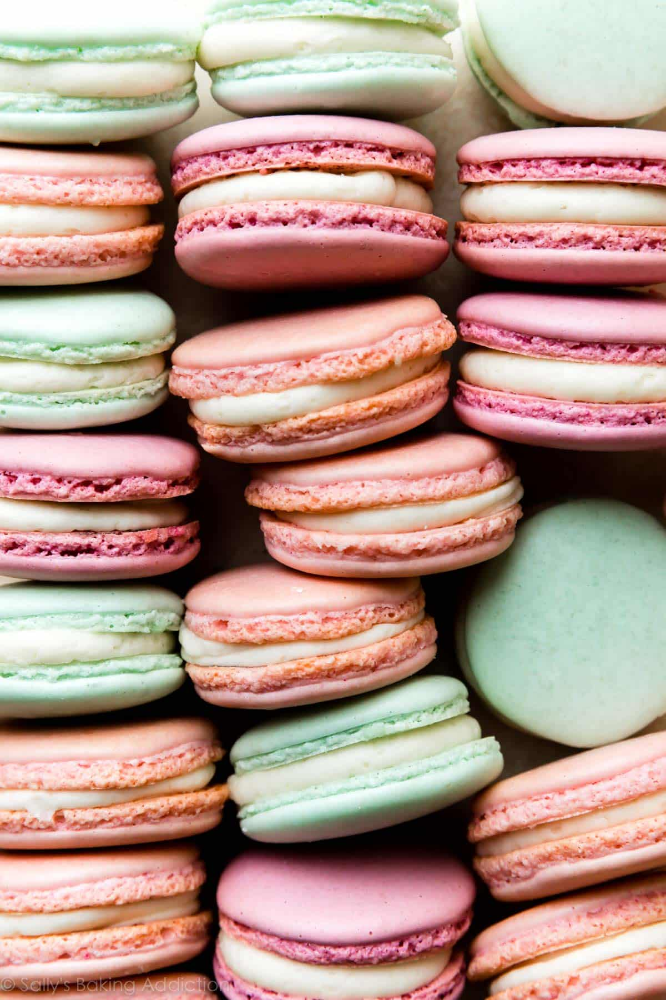

sweet macarons

Description
How to make macarons not macaroons
Ingredients
- 1 cup almond flour
- 1 1/4 cups powdered sugar
- 3 egg whites
- 1/4 cup granulated sugar
- Food coloring (optional)
- Buttercream, ganache, or jam for filling
- Piping bag with a round tip
- Parchment paper
Steps
- Preheat the oven to 300°F (150°C) and line a baking sheet with parchment paper.
- Sift the almond flour and powdered sugar together into a large bowl, ensuring there are no lumps.
- In a separate bowl, beat the egg whites until they form soft peaks.
- Gradually add the granulated sugar to the egg whites while continuing to beat, achieving stiff peaks.
- Gently fold the sifted dry ingredients into the egg whites in three parts, using a spatula, to avoid deflating the mixture.
- If desired, add a few drops of food coloring and mix gently.
- Transfer the macaron batter to a piping bag with a round tip.
- Pipe 1 1/2-inch circles onto the parchment-lined baking sheet, spaced about 2 inches apart.
- Tap the baking sheet on the counter several times to release any air bubbles.
- Allow the piped macarons to rest for 30 minutes to form a skin, which is crucial for the formation of "feet" during baking.
- Bake the macarons in the preheated oven for 15-18 minutes, or until they are set and have formed feet.
- Allow the macarons to cool completely on the baking sheet before removing.
- Once cooled, fill the macarons with buttercream, ganache, or jam, and sandwich them together.